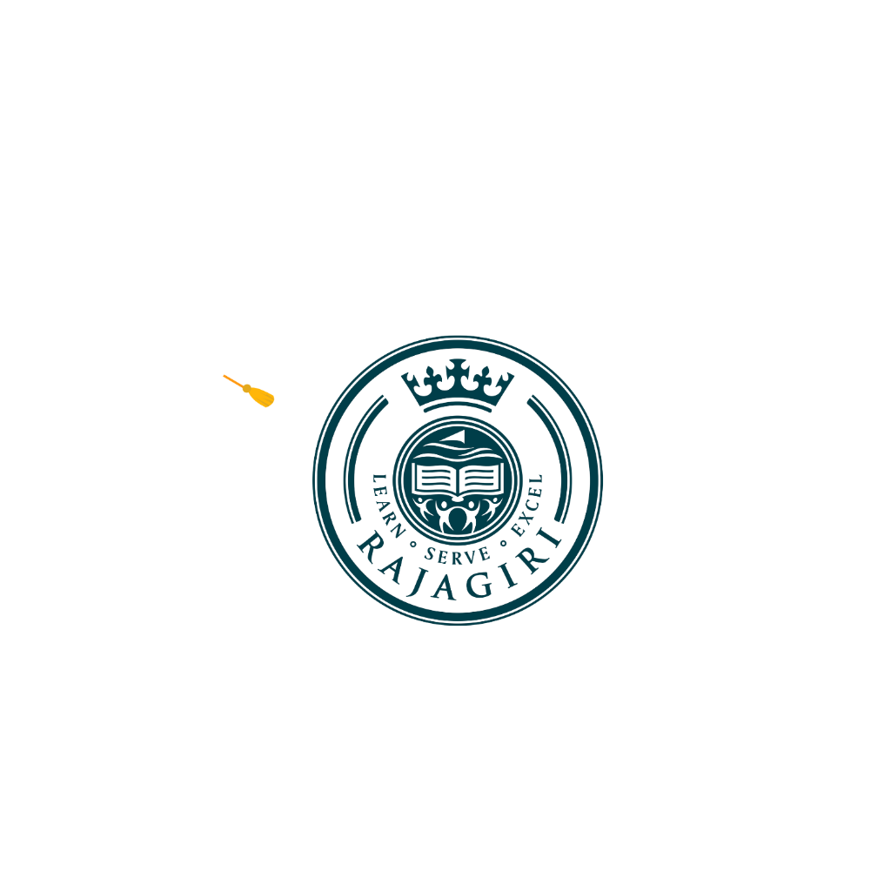

Rajagiri Study Abroad Program • Continuous Student Monitoring System
Addressing key academic tracking challenges to ensure seamless preparation for international study abroad opportunities.
Eliminates fragmented student information by consolidating academic history, internal marks, and co-curricular achievements into one unified portal.
Replaces retrospective reconstruction of records with real-time tracking across all six semesters of the undergraduate programme.
Guarantees document integrity through the E-Docet workflow, allowing coordinators and mentors to inspect and approve certificates.
Provides structured, transparent view-only access to parents and faculty members to monitor progress and support student growth.
Comprehensive institutional tools built specifically for the Rajagiri Study Abroad Program.
Role-based management structure tailored for students, faculty, mentors, and administrators.
Maintain profile, upload certificates to E-Docet, view academic marks, and track mentor action items.
Access PortalConduct mentoring sessions, enter meeting observations, review student activities, and update records.
Mentor LoginVerify E-Docet document uploads, approve or reject certificates with remarks, and monitor overall batch performance.
Coordinator LoginQuick access links to official Rajagiri College portals and academic services.